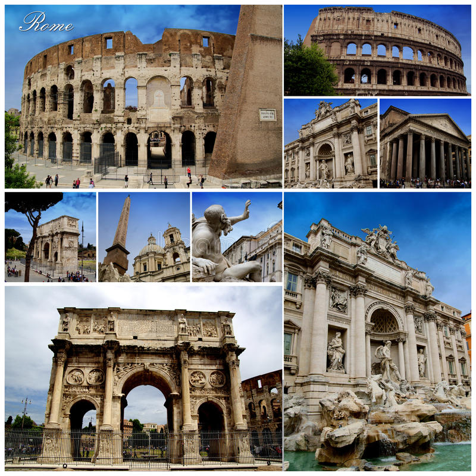

Roma

Рим — столица Италии, Вечный город, один из старейших городов мира и древняя столица Римской империи. Он из тех городов, в которых просто нельзя не побывать хотя бы раз в жизни. Рим расположен на западе центральной части так называемого «итальянского сапога» — Апеннинского полуострова, неподалеку от места, где река Тибр впадает в Тирренское море. Эта река делит город на две части. Исторический центр Рима стоит на семи холмах: Авентин, Капитолий, Целий, Палатин, Квиринал, Виминал, и Эсквилин, высота которых над уровнем моря колеблется от 13 до 139 метров. На территории Рима расположено два самостоятельных государственных образования — город-государство Ватикан, религиозное сердце христианской Европы на протяжении многих веков, и карликовое государство-анклав — Мальтийский орден. «Город на семи холмах и всей земли повелитель», как назвал Рим древний поэт, является родиной латинского языка, имевшего широкое хождение в массах в античную эпоху и сохранившегося в медицине до наших дней. Законодательство Римской империи послужило основой для создания современного западного права. Нынешний Рим — один из наиболее посещаемых городов мира благодаря огромному количеству исторических и архитектурных памятников различных эпох, его центр (в пределах стены Урбана VIII) — настоящий музей под открытым небом, он полностью входит в список Всемирного наследия ЮНЕСКО. Сквозь толщу веков Рим донёс до нас величие дворцов и соборов, мощь средневековых замков и серебряную музыку фонтанов эпохи барокко. В городе можно увидеть сотни палаццо, церквей, памятников археологии, садов и парков. Здесь расположены лучшие в мире музеи и художественные галереи, привлекающие ежегодно миллионы туристов со всех уголков света. Подробнее о римских достопримечательностях, небанальных, но интересных местах, магазинах и ресторанах — в нашем путеводителе по Вечному городу.
← На главную